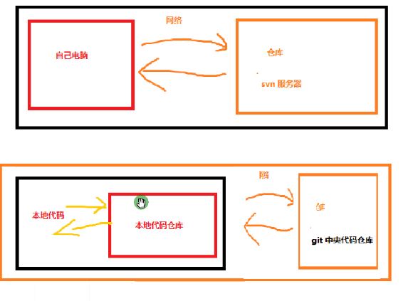

1、git 和 svn 区别：
最核心的区别Git是分布式的，而Svn不是分布的。能理解这点，上手会很容易，声明一点Git并不是目前唯一的分布式版本控制系统，还有比如Mercurial等，所以说它们差不许多。话说回来Git跟Svn一样有自己的集中式版本库和Server端，但Git更倾向于分布式开发，因为每一个开发人员的电脑上都有一个Local Repository,所以即使没有网络也一样可以Commit，查看历史版本记录，创建项 目分支等操作，等网络再次连接上Push到Server端。
作者：白袍君
來源：简书
著作权归作者所有。商业转载请联系作者获得授权，非商业转载请注明出处。



git pull 更新
git status
git add 提交暂存区
git commit -m"xxx" 提交本地仓库
git push 提交中央仓库
一，进了公司， 没有代码， 从头来创建git ，git
项目上传到中心代码仓库。
1. git init 创建空的本地代码仓库。
2. 往本地代码仓库提交：
（1）git add 1.txt; //添加 到暂存区
注意： 如果文件过多， 直接使用 git add .
（2）git commit -m 'zhu shi'// 注释
3. 通过git log 命令，可以查看 往本地代码仓库的提交的记录。
4. （1）恢复代码第一种方法
git reset --hard HEAD^ 恢复上一次代码记录
git reset --hard HEAD^^ 恢复上上一次代码记录
git reset --hard HEAD~3
（2）恢复代码第二种方法
a . git reflog //记录代码 从创建 到此时所有的操作记录，前面有一个ID表示符 ，例如下面的：
//34a7c39 HEAD@{1}: commit: 2222222
b. git reset --hard 34a7c39
(3) 如果未提交代码想恢复， 可以通过 git checkout . 来恢复
5. git status ,查看本地代码是否修改的，
6. 上传github
git remote add origin https://github.com/****/test1604.git //添加远程仓库地址
git push -u origin master //往远程仓库推送代码 (-u 是为了track ,之后可以直接git pull)
注意:如果第一次添加的origin ，出错了， 后来想换成另一个。
git remote remove origin //先删除之前的地址
git remote add origin "新的地址" //添加新的地址
7. 每次提交代码， 都需要先提交 到本地代码仓库， 再提交到中心代码仓库上。
git add . //添加到暂存区
git commit -m 'zhu shi' //往本地仓库提交代码
git push origin master //往远程仓库推送代码
git push origin master:1 推送master 到远程的1 分支
git push origin :1 删除远程1 分支
二. 进了公司， 已经代码，提供了git地址。
1. git clone https://github.com/****/test.git
git clone -b 1 https://github.com/****/test.git (分支)
2. 要想有push的权限， 必须让项目所有者（创建者）把我加为项目贡献者。
三 . 两个人修改同一个代码文件，另一个用户修改完代码后， 告诉我应该更新代码了 。
1. git pull 更新本地代码，。
再进行代码修改，没有问题
2另一个用户修改完代码后， 没告诉我应该更新代码了 ，我也修改了同一个文件，就发生代码冲突问题。（提交失败）
（1）git pull, （拉取服务器的代码， 会造成自动合并失败，需要手动合并）
(2)手动合并代码（小乌龟git 工具 进行代码对比）
常见错误：
1. 少空格情况 ， git commit-m (错误)
2. 提交必须git add ,然后 git commit
3. github 邮箱必选验证
4. 第一次提交时， 出错错误， 要告诉git 工具 你是谁， 要敲代码，
git config --global user.name 'kerwin'
------------------------回车--------分割线-----------------------------
git config --global user.email 'kerwin@163.com'
5. 千万不要从github 中央代码仓库 随便删东西 ，这样会引发全部组员的代码冲突问题
6. 每次敲完回车之后， 看下是否有以下关键字 “”fatal， ， error “” 错误
7. 在命令行中 复制 粘贴 ，不要用 ctrl+c 不要用ctrl+v , 用鼠标右键赋值 粘贴
扩展：
管理员权限运行
0 . 需要设置表示符：
git config --global user.name 'kerwin'
------------------------回车--------分割线-----------------------------
git config --global user.email 'kerwin@163.com'
1. git clone https://github.com/****/myGitHubGit.git 用这种方式clone 出来的 git项目 每次push 时都要输入
用户名和密码
2. 生成私有key 以及公有key （公有copy到github上面）
（1）生成ssh-keygen -t rsa -C "your_email@youremail.com"
测试ssh -T git@github.com
（2）更改代码传输方式为ssh （如果是https ，还是需要继续输入用户名和密码）；
git remote remove origin
git remote add origin git@github.com:Username/Your_Repo_Name.git
或者clone 时 ，用git clone git@github.com:***/myGitHubGit.git
这样就不需要输入用户名和密码了。
3. 对于 kerwin 创建的github 项目 只有kerwin 账号密码可以提交修改。
在这myl 想要使用提交修改这个项目 ，
让kerwin 把 myl 添加为贡献者，myl 有权限读写
小乌龟不需要输入密码的方法：
（1）
当你配置好git后，在C:\Users\Administrator 目录下有一个 .gitconfig 的文件，里面会有你先前配好的name 和email，只需在下面加一行
[credential]
helper = store
下次再输入用户名 和密码 时，git就会记住，从而在C:\Users\Administrator 目录下形成一个 .git-credentials 文件，里面就是保存的你的用户名和密码（注意是明文存储！！！）。
这样以后再连接时，就不用再输入用户名和密码了！